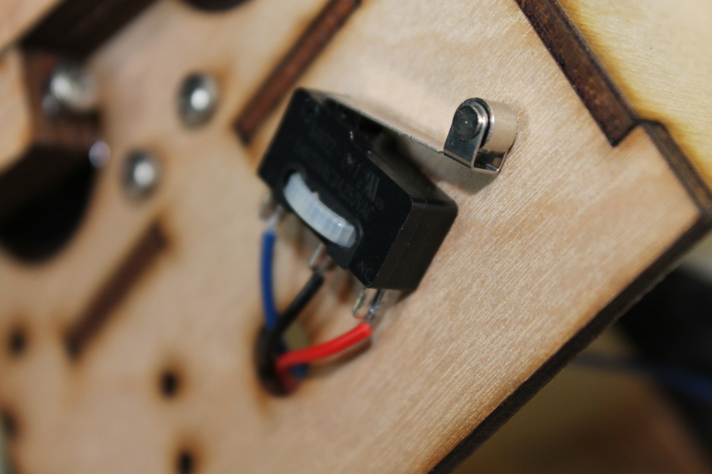

red is the pin closest to the roller.
black is the center pin.
blue is the pin closest to the clicker.
connect the RUMBA controller to your computer with the USB cable provided.

connect the switch to an input.
install test_switches.ino
open the serial window and set the baud rate to 57600.
press the switch. A column should change from 1 to 0.
disconnect USB.
thread the wire for two switches through the hole in each face. secure the switches with zip ties so that the roller is downward.
Switches 1 and 2 should be side-by-side with switch 1 on the right.
Switches 3 and 4 should be side-by-side with switch 3 on the right.
Switches 5 and 6 should be side-by-side with switch 5 on the right.
connect the RUMBA controller to your computer with the USB cable provided.
test the switches again to be sure they are in the correct order.
disconnect USB.